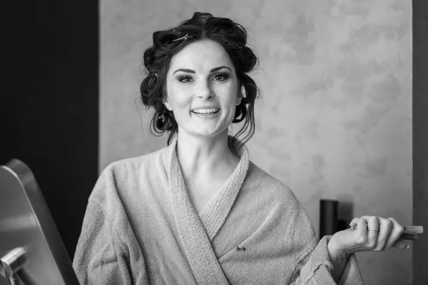

Svatební fotograf
Fotím celý svatební den od příprav až po zábavu, nafotím přes 1500 záběrů a 300 z nich vyberu a upravím. Předsvatební focení je u mě zdarma.



Jmenuji se Marian Mrózek a jsem svatební fotograf a DJ z Prahy. Na vaší svatbě můžu být celý den, s foťákem v ruce i u pultu, a předsvatební focení je u mě zdarma.
Více o mně
„Jsem přesvědčený, že jako klienti máte právo vybrat si své fotky sami.“
— Marian Mrózek
Fotím celý svatební den od příprav až po zábavu, nafotím přes 1500 záběrů a 300 z nich vyberu a upravím. Předsvatební focení je u mě zdarma.
Fotograf i DJ na celý den v jednom. Nafotím přes 2000 záběrů, upravím 400 fotografií a k tomu se postarám o hudbu.
Portrétní focení po domluvě. Napište mi ve zkratce, co si představujete, a domluvíme se na podrobnostech.
Reportážní focení akcí, kde se hlavně dívám na lidi a na to, co se mezi nimi děje.
Fotografie jsou ilustrační
A tady mě máte! Nic moc, co? Však každému Pán Bůh nenadělil. Prý jsem ale hodný, milý, spolehlivý a pohodový, a to se na svatbě hodí víc než cokoli jiného.
Svatby fotím a k tomu dělám DJ, takže vám můžu nabídnout obojí v jednom. Fotím celý den, od příprav přes obřad až po zábavu. Víc než 900 spokojených klientů mi dává jistotu, že to dělám dobře.
Jsem přesvědčený, že fotky si máte vybírat sami. Nemám šanci poznat vás tak dobře, abych věděl, kdo je pro vás důležitý. Někdy fotka nevyjde dokonale, ale důležité je, jaké emoce ve vás vyvolá.
Zavolejte mi nebo napište. Když rovnou uvedete termín a místo obřadu i zábavy, domluvíme se rychleji.
Stačí hodinka. Zajdeme třeba na Šárku, uděláme pár fotek a domluvíme se na všem podstatném. Předsvatební focení je zdarma.
Jsem s vámi celý den a nafotím přes 1500 záběrů. Pokud chcete i DJ, postarám se o hudbu, světla a ozvučení obřadu i hostiny.
Fotky si vybíráte sami, rád vám s tím pomůžu. Vybrané snímky pak upravím, v balíčku Foto je to 300 fotografií, ve Foto+DJ 400.
Fotograf na celý den stojí 19 000 Kč. Fotograf a DJ na celý den 26 000 Kč a samotný DJ 13 000 Kč.
Prvních 100 km je v ceně, dál počítám 7 Kč za kilometr.
Vy. Jen vy víte, kdo je pro vás na svatbě důležitý. Pomůžu vám, ale základní výběr by měl být na vás.
Rád vás uvidím, jen prosím volejte nebo pište předem. Často jsem v terénu, takže přijít naslepo nemusí vyjít.